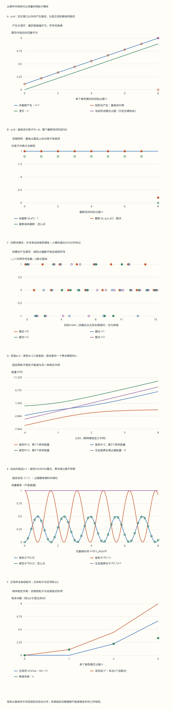

本页目录
凝聚态 I · 二次量子化：从交换符号到两粒子干涉
前置：正则量子化、全同粒子与单粒子矩阵力学。本页目标：把归一化、交换统计、相互作用与可测概率连接起来；能从算符自行构造一个有限多体矩阵。
建议分两次学习：先完成第 1–7 节的代数，再用第 8–11 节把代数变成实验。每次都先写预测，再打开结果。
从“哪个粒子在哪”换到“哪个模式有几个粒子”
1. 两个相同粒子，为什么不能只给它们编号？
想象两个相连的势阱，每边起初各有一个粒子。打开耦合后，测量时可能得到“一边两个，另一边零个”，也可能仍是一边一个。我们要算的是这些结果的概率振幅如何相加，不是跟踪两颗带名字的小球。
这里的“模式”是一个完整的单粒子态，可以包含位置、轨道和自旋。一个空间轨道里的自旋向上、向下电子是两个模式；Pauli 原理限制同一个完整模式，不能把它读成“一个格点永远只能有一个电子”。
选正交归一的两个模式 \(\phi_0,\phi_1\)，两粒子各占一个模式时，归一化波函数为
\(+\) 对应玻色对称态，\(-\) 对应费米反对称态。交换 \(x_1,x_2\) 后发生的是波函数的对称或反对称变换。两个项代表不可区分的排列，计算概率前必须先合并振幅。
若两粒子都占 \(\phi_0\)，玻色子的归一化波函数就是 \(\phi_0(x_1)\phi_0(x_2)\)；费米反对称组合则为零。本页采用通常三维非相对论多体理论的 Bose/Fermi 统计，不会从这一条代数推导相对论的自旋—统计定理，也不涵盖二维任意子。
先想一想： 两粒子各在一边，与“每个粒子都独立以一半概率选一边”，是不是同一个纯态？若觉得一样，第 9 节的干涉会给出可检验的反例。
2. Fock 空间并没有增加一次“量子化”
固定粒子数 \(N\) 时，多体空间分别是单粒子空间 \(\mathcal H_1\) 的对称张量幂 \(\operatorname{Sym}^N\mathcal H_1\) 与反对称张量幂 \(\bigwedge^N\mathcal H_1\)。Fock 空间把不同 \(N\) 的空间直和放在一起：
真空 \(|\mathrm{vac}\rangle\) 是 \(N=0\) 的归一化态；它不是零向量。写成直和，方便产生与湮灭算符在不同粒子数扇区之间工作，不代表实际 Hamiltonian 一定改变粒子数，也不自动规定不同电荷扇区的相干叠加如何制备。
本页固定模式顺序 \(0<1<\cdots<M-1\)，定义归一化占据基：
玻色占据 \(n_i=0,1,2,\ldots\)，费米占据 \(n_i=0,1\)；\(\sum_i n_i=N\)。乘积按书写顺序定义基矢，但作用时仍从最右边开始。一般态是这些占据基的线性组合，不是只能选择一张确定占据表。
有限 \(M\) 模式、固定 \(N\) 的维数为
第一式是把 \(N\) 个相同计数分给 \(M\) 个盒子的组合数；第二式是从 \(M\) 个模式选出 \(N\) 个。两玻色模式、\(N=2\) 有 \(|2,0\rangle,|1,1\rangle,|0,2\rangle\) 三态；两费米模式、\(N=2\) 只有 \(|1,1\rangle\)。四费米模式的整个 Fock 空间有 \(2^4=16\) 态，其中 \(N=2\) 扇区有 \(\binom42=6\) 态。
这解释了为什么二次量子化让记号更合适，却没有自动消除多体空间的增长。
3. 玻色子的平方根：先算范数，再解释增强
从 \([a_i,a_j^\dagger]=\delta_{ij}\)、\([a_i,a_j]=0\) 和 \(a_i|\mathrm{vac}\rangle=0\) 出发。对单模式，反复使用 \(aa^\dagger=a^\dagger a+1\)，可证明
作用于真空后，左边只剩第二项。因此 \(\langle\mathrm{vac}|a^n(a^\dagger)^n|\mathrm{vac}\rangle=n!\)，归一化要求 \(|n\rangle=(a^\dagger)^n|\mathrm{vac}\rangle/\sqrt{n!}\)。现在再作用一次：
当 \(n=0\) 时，第二式表示零向量，不存在 \(|-1\rangle\)。由此得到 \(a^\dagger a|n\rangle=n|n\rangle\)，而 \(aa^\dagger|n\rangle=(n+1)|n\rangle\)。
一个完整算例。 从 \(|2,1\rangle\) 出发，把模式 1 的一个粒子搬到模式 0：
一般 \(i\ne j\) 时，搬运系数为 \(\sqrt{(n_i+1)n_j}\)。它同时包含“来源中有多少粒子可以移除”和“目标模式的产生增强”。这是振幅因子；只有连同耦合、演化时间和其他路径计算后，才得到测量概率，不能直接把 \(\sqrt3\) 叫做概率。
4. 费米子的负号：一个可逐项追踪的奇偶计数
费米关系是 \(\{c_i,c_j^\dagger\}=\delta_{ij}\)、\(\{c_i,c_j\}=0\)。特别地，\(\{c_i^\dagger,c_i^\dagger\}=2(c_i^\dagger)^2=0\)，所以同模式重复产生必为零。
令 \(S_i(\boldsymbol n)=\sum_{k<i}n_k\)。把 \(c_i\) 或 \(c_i^\dagger\) 移到规范顺序中的第 \(i\) 个位置，要跨过前方已占据模式的产生算符，每跨一次乘 \(-1\)：
因子为零时，右侧整体就是零向量，不把不合法占据基当作状态。例子是 \(c_1^\dagger|1,0\rangle=-|1,1\rangle\)，但 \(c_0^\dagger|0,1\rangle=+|1,1\rangle\)。
在占据位的张量积表示里，令 \(Z_k|n_k\rangle=(-1)^{n_k}|n_k\rangle\)，\(s_i^+=|1\rangle_i\langle0|\)，\(s_i^-=|0\rangle_i\langle1|\)，则
这是有限模式的 Jordan–Wigner 表示。只用局部 \(s_i^\pm\) 而省掉 \(Z\) 串，不同模式上的局部矩阵会对易，便不能满足费米反对易关系。实验检查四模式的全部 16 态、所有模式对及三类 CAR；它比较合并后的完整输出态和系数，不是仅看一个对角期望。
换规范顺序也必须一致。若将产生算符顺序全部反转，含 \(N\) 个粒子的占据基乘上 \(D_{\boldsymbol n}=(-1)^{N(N-1)/2}\)。新矩阵为 \(O'=DOD\)，态的坐标也同时变换，所以可观测概率保持不变。表中逐项对照“原矩阵变换”与“直接使用反序定义”的结果。
5. 怎样把一次量子化的单体算符翻译过来？
设单粒子算符 \(h\) 在正交模式基中的矩阵元为 \(h_{ij}=\langle\phi_i|h|\phi_j\rangle\)。其作用于所有粒子的总和应写成
其中 \(b=a\) 或 \(c\)，必须与所选统计匹配。右边先从模式 \(j\) 移除一个粒子，再在 \(i\) 产生；前面的矩阵元负责一次单粒子变换的振幅。
为什么它等于一次量子化里的 \(\sum_{\alpha=1}^N h^{(\alpha)}\)？关键是对两种统计均成立的普通对易式
玻色情形直接用 CCR 展开。费米情形写 \(c_jc_k^\dagger=\delta_{jk}-c_k^\dagger c_j\) 后，三算符项在两边相减时抵消，留下同一个结果。因此
再对一个含 \(N\) 个产生算符的乘积应用 \([A,BC]=[A,B]C+B[A,C]\)，便得到 \(N\) 项：每一项恰好只替换一个单粒子模式。真空项 \(\widehat H_1|\mathrm{vac}\rangle=0\)，所以整个动作就是逐粒子求和。这里用的是双线性算符的普通对易子，不要因为粒子是费米子就把所有方括号换成反对易括号。
若 \(h\) 已对角化，\(\widehat H_1=\sum_i\epsilon_i n_i\)。即使可以这样写，固定总数下玻色和费米允许的占据集合仍不同，自由多体基态的填充规则也不同。
6. 两体项的 \(1/2\)、正规序与粒子数守恒
一次量子化的两体相互作用是 \(\sum_{\alpha<\beta}V(x_\alpha,x_\beta)\)，假定势对交换两粒子对称。明确采用未经反对称化的模式矩阵元
相应的算符为
最右的 \(b_k\) 对应 \(x\)，然后 \(b_l\) 对应 \(y\)；左边按相反过程重建。两次移除选出的是有序粒子对 \((\alpha,\beta)\)，所以每个无序对被计算两次，前面需要 \(1/2\)。费米交换符号由算符代数承担。若另一本书把 \(V\) 定义成已经反对称化的矩阵元，求和约定与前因子可能一起变化，不能只移植系数。
对单个玻色模式的接触相互作用，正规序给出
证明可以直接连续作用两次湮灭，振幅 \(\sqrt{n(n-1)}\)，再连续产生回到原态，最终系数为 \(n(n-1)\)。也可从 \(n^2=a^\dagger aa^\dagger a=a^\dagger a^\dagger aa+n\) 推出。误写 \(Un^2/2\) 会给单粒子态也加上“自身与自身相互作用”的 \(U/2\)。
令 \(\widehat N=\sum_i b_i^\dagger b_i\)。由 \([\widehat N,b_i^\dagger]=b_i^\dagger\)、\([\widehat N,b_i]=-b_i\)，一个正常算符单项式若含 \(r\) 个产生、\(s\) 个湮灭，便有 \([\widehat N,O]=(r-s)O\)。上述单体项和两体项都满足 \(r=s\)，因此守恒总数。
相反，BCS 平均场里会出现 \(c_i^\dagger c_j^\dagger+\mathrm{h.c.}\)，它改变粒子数两个，通常不与 \(\widehat N\) 对易，但仍守恒费米奇偶性 \((-1)^{\widehat N}\)。这不表示电子被无缘无故创造出来；需要在后续课程解释配对场、凝聚体和所采用的近似。
7. 两种有限化：显示窗口、投影算符与完整扇区
在纸上只列 \(n=0,\ldots,q\) 的几个例子，不会改变无限梯子的公式；从最高显示态 \(|q\rangle\) 出发，\(a^\dagger\) 仍可到 \(|q+1\rangle\)。实验的“未截断”分支保留这些中间态。
真正投影则不同。定义 \(P_q=\sum_{n=0}^q|n\rangle\langle n|\)、\(a_q=P_qaP_q\)，于是 \(a_q^\dagger|q\rangle=0\)。计算两条路径：
因此
迹为 \((q+1)-(q+1)=0\)，与任意有限矩阵的 \(\operatorname{Tr}[A,B]=0\) 一致。有限矩阵不可能在整个空间精确满足 \([a,a^\dagger]=I\)。提高 \(q\) 把缺陷移到更高占据，却不会让算符范数中的缺陷消失；讨论具体态的数值收敛，还需检查高占据权重与观测量误差。
另一种常见陷阱： 固定 \(N\) 扇区里的产生或湮灭单算符都把态送出该扇区，所以 \(P_Na_iP_N=0\)。然而搬运算符 \(P_Na_i^\dagger a_jP_N\) 通常不为零：
应先完整组合算符，再限制到守恒扇区。下面的两玻色模式 \(N=2\) 三态空间包含这个扇区的全部状态，Hamiltonian 在其中封闭；它是精确的扇区限制，与单模式截断滑块 \(q\) 无关。即使把滑块设为 \(q=1\)，下方模型仍保留 \(|2,0\rangle\) 与 \(|0,2\rangle\)，以便把两种操作区分清楚。
8. 从算符构造两个不同的两模式 Hamiltonian
以下用固定能量单位 \(E_0\)，\(t,U,\Delta\) 表示能量；数值表显示它们除以 \(E_0\) 后的数。\(t\) 是跃迁耦合，时间另记 \(\tau=E_0t_{\rm phys}/\hbar\)。
无自旋费米模型。 采用跨模式密度相互作用：
在顺序 \(|0,0\rangle,|1,0\rangle,|0,1\rangle,|1,1\rangle\) 下，
例：\(c_1^\dagger c_0|1,0\rangle=|0,1\rangle\)，所以列 \(|1,0\rangle\)、行 \(|0,1\rangle\) 的贡献为 \(-t\)。从 \(|1,1\rangle\) 出发，先移除一个粒子后，另一边仍已占据，下一次产生被阻挡，两条跃迁贡献都为零。\(Un_0n_1\) 描述两个不同模式之间的密度能，不是同模式双占据能。
玻色 Bose–Hubbard 二聚体。 改用各模式内部的接触相互作用：
在完整 \(N=2\) 基 \(|2,0\rangle,|1,1\rangle,|0,2\rangle\) 下，
这里 \(a_0^\dagger a_1|1,1\rangle=\sqrt2|2,0\rangle\)；三态的相互作用能分别为 \(U,0,U\)。两模型共享跃迁和势差的写法，相互作用的定义却不同，不能把图中的同一数值 \(U\) 当成完全相同的物理操作。
实验按“初态作为列，末态作为行”逐项组装矩阵，再检查 Hermiticity、\([H,N]\) 和本征方程。此处 \(H_B\) 的三态全有 \(N=2\)；\(H_F\) 的四态分别有 \(N=0,1,1,2\)。两模型都只代表有限系统，不足以独立宣布 Mott 相变或超导。
9. 从能级到概率：为什么玻色子会出现聚束？
先看对称势阱 \(\Delta=0\)。定义
\(|A\rangle\) 的两条跃迁振幅抵消，能量为 \(U\)；\(|S\rangle\) 与 \(|1,1\rangle\) 的耦合则相加，得到
所以完整谱为 \(\{E_-,U,E_+\}\)，排序随参数自动处理。对初态 \(|1,1\rangle\)，若将能量均以 \(E_0\) 为单位写成数值，令 \(\Omega=\sqrt{U^2+16t^2}\)，两边双占据的总概率为
当 \(\Omega=0\) 时按无演化的极限取零。强 \(|U|/|t|\) 下，这个特定初态向双占据态的转移受抑；这是动力学结论，不能据此断言吸引相互作用的基态也不喜欢双占据。
自由且共振时 \(U=\Delta=0\)，公式化为
当 \(t\ne0\)、\(\tau=\pi/(4|t|)\) 时，\(P_{11}=0\)、\(P_{20}=P_{02}=1/2\)。这是两条不可区分路径的干涉。若换成两个可区分、独立通过相同平衡分束器的粒子，反而得到 \(P_{11}=1/2\)、\(P_{20}=P_{02}=1/4\)。
两无自旋费米模式的初态 \(|1,1\rangle\) 则始终只积累相位 \(e^{-iU\tau}\)，占据概率为一。它并不是“没有量子演化”，而是本模型的固定满占据扇区只有一维，所有占据测量都看不见这个整体相位。
对一般 \(\Delta\)，实验使用完整三态矩阵的正交本征基，计算 \(\psi_j(\tau)=\sum_\alpha v_{\alpha j}v_{\alpha,11}e^{-iE_\alpha\tau}\)。 表中保留实部、虚部、概率、范数与能量；本征向量的任意整体符号会在乘积中抵消。简并时也使用完整本征子空间，不能随意挑一个“基态向量”来冒充唯一物理预测。
10. 实验路线：每次只改变一个问题
先用默认自由玻色模型看第 9 节的聚束，再依次检查：
- “第二模式产生负号”：局部初态 \(|1,0\rangle\)，操作模式 1，先手算 \(c_1^\dagger\)，再打开动作表。四模式符号图按每个 mask 完整列出，轻微横向错位只为了让四组点分开。
- “玻色子最高显示态”：比较同一个 \(|q\rangle\) 上的未截断和投影产生；查看最高态对易子与总迹。不要把显示边界误读成 Pauli 约束。
- “强排斥”与“吸引”：初态仍固定 \(|1,1\rangle\)，用第 9 节的上限预测双占据最大概率，再检查曲线和完整复振幅。
- “不等势阱”：\(\Delta\ne0\) 时对称、反对称组合不再自动分块，回到三态矩阵；检查排序能量、本征残差、概率归一化与能量守恒。
- “跃迁符号反转”：观察 \(t\to-t\) 时能量和占据概率不变，但某些振幅符号改变。两模式系统可用模式的相位变换吸收这个符号，不能推广成任意带环晶格的所有跃迁相位都可消掉。
- “零跃迁与简并”：初态不转移，重复能量是合法结果。确认界面没有把简并误报为失败，也不把数值微小残差解释成物理劈裂。
局部算符的 \(n_0,n_1\) 滑块只选择代数问题；动力学始终从 \(|1,1\rangle\) 出发。统计选择只改变局部动作表，下方同时保留两种物理模型作比较。最后的自由聚束参照会另设 \(U=\Delta=0\) 计算，不能当成当前相互作用曲线的结果。
无脚本对照：六份完整记录保留每条算符路径、全部四模式CAR、截断缺陷、两模型矩阵、能谱和161个时间点的复振幅。整数与根式系数精确保存；本征分解和时间演化采用浮点数。

| 预设 | 局部统计 | q | t/E0 | U/E0 | Δ/E0 | 玻色N=2能量/E0 |
|---|---|---|---|---|---|---|
| default | boson | 3 | 1.0 | 0.0 | 0.0 | -2, -1.9467935e-16, 2 |
| sign | fermion | 3 | 1.0 | 0.0 | 0.0 | -2, -1.9467935e-16, 2 |
| top | boson | 8 | 1.0 | 0.0 | 0.0 | -2, -1.9467935e-16, 2 |
| repulsive | boson | 3 | 1.0 | 8.0 | 0.0 | -0.47213595, 8, 8.472136 |
| tilted | boson | 3 | 1.0 | 1.0 | 2.0 | -2.1413361, 0.51513805, 3.6261981 |
| zero | boson | 3 | 0.0 | 0.0 | 0.0 | 0, 0, 0 |
下载六份完整记录。q只用于投影代数比较，下面始终完整的两玻色子三态矩阵不随q截断。局部占据选择不改变动力学初态。
11. 八道练习：把中间步骤保留下来
练习 1：两玻色模式、三个粒子有几态？怎样归一化 |2,1〉？
固定 \(N=3\) 的非负整数解为 \((3,0),(2,1),(1,2),(0,3)\)，共 \(\binom{3+2-1}{3}=4\) 态。不能把两个模式各自截成 \(0,\ldots,3\) 后所得 \(16\) 态全部算进去，因为其中许多态的总数不是三。
在占据表示中，
对应的归一化位置波函数，是三个不同排列的等振幅组合：
三个乘积因正交模式而相互正交，各自范数为一，所以归一化因子是 \(1/\sqrt3\)。占据式的 \(1/\sqrt2\) 与波函数式的 \(1/\sqrt3\) 并不矛盾：两种未归一化表达式本身的范数不同。
练习 2：亲手核对一个非对角费米反对易关系。
在 \(|1,0\rangle\) 上比较 \(c_0c_1^\dagger\) 与 \(c_1^\dagger c_0\)。第一条路径：
第二条路径：
两者相加为零，验证该态上的 \(\{c_0,c_1^\dagger\}=0\)。若只算 \(\langle1,0|\{c_0,c_1^\dagger\}|1,0\rangle\)，即使错误地得到 \(2|0,1\rangle\)，对角期望仍为零，会漏掉错误。因此实验检查所有输出基态系数。
要证明整个有限空间上的算符恒等式，还须覆盖一组完整基。四模式实验做这件事；要推广任意模式数，则使用第 4 节的奇偶串代数证明。
练习 3：在 q=2 的截断空间写出 a，并计算对易子。
按 \(|0\rangle,|1\rangle,|2\rangle\) 排列，矩阵的列是输入、行是输出：
取共轭转置：
所以 \(a_2a_2^\dagger=\operatorname{diag}(1,2,0)\)，\(a_2^\dagger a_2=\operatorname{diag}(0,1,2)\)，两者之差为 \(\operatorname{diag}(1,1,-2)\)。迹为零，最高态缺陷为 \(-3\)。
若只是在显示表里把 \(n\) 列到二，未截断路径 \(a^\dagger|2\rangle=\sqrt3|3\rangle\) 仍存在，接着 \(a\) 给出 \(3|2\rangle\)；减去另一条路径的 \(2|2\rangle\)，结果仍为 \(|2\rangle\)。
再看固定两粒子扇区，虽然 \(P_2a_0^\dagger P_2=P_2a_1P_2=0\)，但 \(P_2a_0^\dagger a_1P_2|1,1\rangle=\sqrt2|2,0\rangle\)。这个例子同时说明投影与乘法不能随意交换。
练习 4：为什么 U n(n−1)/2 在 n=0、1、2、3 时给 0、0、U、3U？
\(n\) 个粒子的无序对数是 \(\binom n2=n(n-1)/2\)。把每对相互作用能设为 \(U\)，便依次得到零对、零对、一对、三对。
从算符再算一次：\(aa|n\rangle=\sqrt{n(n-1)}|n-2\rangle\)，而 \(a^\dagger a^\dagger\) 将它变回原态并再乘相同平方根，因此总系数为 \(n(n-1)\)。前面的 \(1/2\) 把有序对化成无序对。
同一个费米模式有 \(cc=0\)，这种同模式两体项直接为零。但对两个不同自旋模式，\(n_\uparrow n_\downarrow\) 可以为一。电子 Hubbard 模型的格点双占据指后者，不能拿“同模式最多一个”来排除它。
练习 5：推导玻色三态的 −2t 耦合，以及自由聚束时刻。
从中间态出发，
对称态到中间态也给 \(-2t\)，由此在 \(U=\Delta=0\) 时，二态 Hamiltonian 是 \(-2t\sigma_x\)。指数公式为
从 \(|1,1\rangle\) 出发，\(\psi(\tau)=\cos(2t\tau)|1,1\rangle+i\sin(2t\tau)|S\rangle\)。因此两端态的振幅各为 \(i\sin(2t\tau)/\sqrt2\)，平方后得到第 9 节的三个概率。
当 \(t=1\)、\(\tau=\pi/4\)，中间态振幅为零。两端概率各一半，但态仍是带确定相对相位的相干叠加。只知道两端概率，不能把它直接替换成各一半的经典混合态；后续再耦合的干涉会区分两者。
练习 6：强排斥 U=8t 时，从 |1,1〉 出发最多有多少双占据？
在 \(\Delta=0\)、\(t\ne0\) 时，第 9 节的正弦平方至多为一，所以
代入 \(U=8t\) 得上限 \(16/(64+16)=1/5\)。这不是只靠“排斥较大”的定性判断，而是有限二态振荡的严格振幅上限。有限显示时间窗口是否刚好取到最大值，则还取决于采样点；不能把画出的离散最大值当作精确上限本身。
把 \(U\) 改为 \(-8t\)，这个初态的转移上限仍为 \(1/5\)，但能谱和最低能态的物理意义改变。动力学转移需要考虑初态的能量匹配，不能把它与基态的双占据偏好混为一谈。
练习 7：换费米基矢顺序，为什么物理结果不变？
两模式原基 \(|1,1\rangle=c_0^\dagger c_1^\dagger|\mathrm{vac}\rangle\)，反序基为 \(|1,1\rangle'=c_1^\dagger c_0^\dagger|\mathrm{vac}\rangle=-|1,1\rangle\)。另外三个占据态不变，所以 \(D=\operatorname{diag}(1,1,1,-1)\)。
原矩阵元 \(\langle1,1|c_1^\dagger|1,0\rangle=-1\)。新矩阵元为 \((-1)\times(-1)\times1=+1\)，正是 \(Dc_1^\dagger D\) 相应元素。与此同时，任意态的列向量变为 \(\psi'=D\psi\)，故
费米的交换统计没有消失，只是符号在基矢与坐标之间重新分配。若只改矩阵中一个负号，却保持其他算符和态完全不变，就不是合法的基变换。
练习 8：哪些结论可以带去研究 Hubbard 晶格，哪些还需要补条件？
可以直接复用的是占据基、费米奇偶串、算符项的逐步作用、Hermiticity、守恒量分块与可观测量计算。四个带自旋的格点模式可构成真正电子二聚体，在 \(N=2\) 时有六态，需保留自旋与所有允许跃迁。
不能直接复用的是“两无自旋费米模式满占据后不动，所以电子都不能跃迁”。电子二聚体中，另一格点的反向自旋模式可能空着，跃迁可以形成格点双占据；虚跃迁还会产生低能自旋交换。对应的六态计算见 Hubbard 二聚体。
也不能仅用几条有限能级曲线就宣布 Mott 相变。需要说明格点数、填充、边界条件、热力学极限以及电荷能隙或响应如何随规模变化。对数值算法，还要独立检查截断和时间演化误差；一个很小的本征残差不是对整个物理近似的总误差保证。
12. 带着这套语言继续学习
现在应能完成三个迁移：看见 \(b_i^\dagger b_j\) 就能读出单粒子搬运；看见四算符项就能追踪两个粒子的移除、重建与计数因子；看见一个有限矩阵就能说清它来自完整守恒扇区还是额外截断。
继续 BCS 与超导 时，重点追问配对项为何改变 \(N\) 却守恒奇偶性；继续 Green 函数 时，重点追问产生和湮灭的先后顺序如何进入相关函数。到张量网络与量子模拟，再把本页的有限奇偶串和截断缺陷当作基本检验。
本页的有限模型、例题与交互计算均围绕明确的算符约定独立展开。进一步阅读可使用：
- Tasaki：非相对论二次量子化讲义，第 3–4 节：从多体波函数到占据表示与 Hamiltonian，适合继续核对各步定义。
- Levitov：MIT 8.514 二次量子化讲义：玻色 Fock 表示、模式矩阵元与相互作用的后续例子。
完成标准： 不看结果表，独立算出一个带负号的费米动作、一个带平方根的玻色跃迁、一个截断反例，并用三个复振幅重建同一时刻的归一化概率。能指出模型边界，比只记住矩阵长什么样更能支持后面的多体课程。